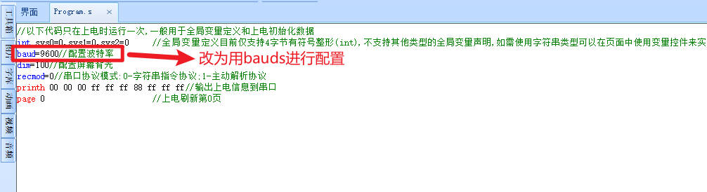
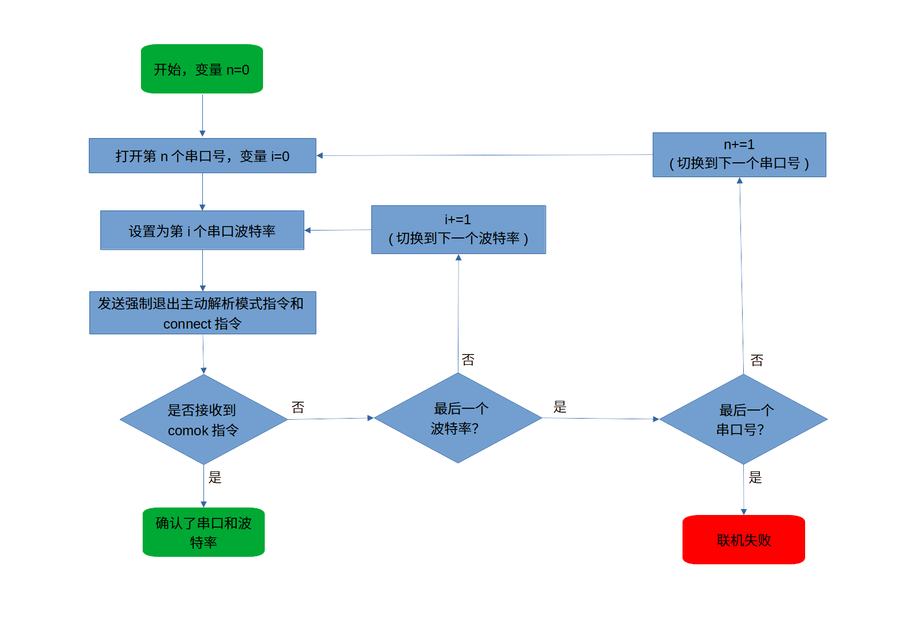
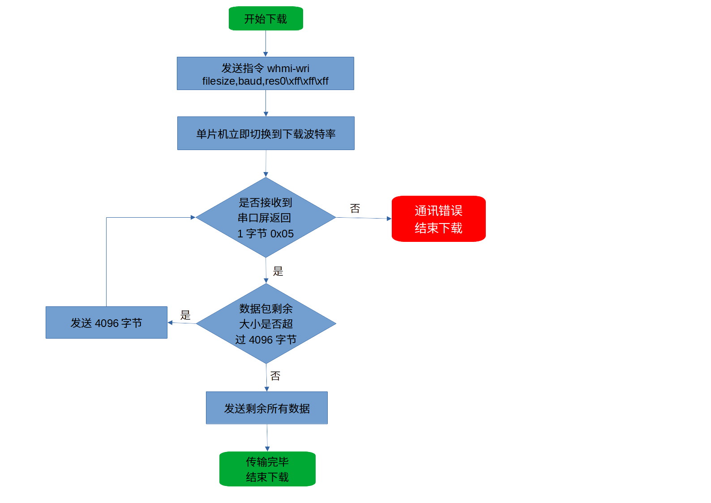

HMI下载协议详解/OTA升级
关键词：远程升级，通过单片机下载，OTA升级，云端升级
注意
使用本协议进行HMI下载时,在串口屏工程中请务必使用bauds来进行波特率配置，避免升级失败后导致波特率改变导致无法联机，参考 baud和bauds的区别

本文讲述的HMI下载协议仅适用于希望自己制作下载程序或者希望单片机去控制HMI下载资源文件的用户，属于高级应用范畴，不属于HMI界面设计的范畴，因此需要有一定基础的用户才能操作。
深圳市淘晶驰电子有限公司仅仅只对此协议做一个公布说明，不提供任何跟下载协议有关的技术支持。
如果对串口操作不熟悉的朋友建议忽略此说明，请直接使用USART HMI软件进行下载即可，无需对此协议有任何了解 通过串口下载工程到串口屏 / 通过SD卡下载工程到串口屏 。
以下部分为下载协议的介绍。
下载情况分为2种：
未知串口号和波特率
在windwos，linux，macos等通用操作系统上自己编写下载工具，通常使用的是USB转ttl工具，需要通过 【下载步骤1：联机操作】 先搜索HMI设备在哪个串口上，以及串口屏设备当前的波特率，然后通过 【下载步骤2：开始下载】 ，即可开始下载
已知串口号和波特率
使用单片机，已经知道串口和通讯波特率的情况下，直接跳到 【下载步骤2：开始下载】 ，即可开始下载。如果当前屏幕在主动解析模式下，请先退出主动解析模式。
【下载步骤1：联机操作】
注意
此步骤主要用来搜索HMI设备在哪个串口上，以及设备当前的波特率。如果这两个条件是已知的，那么可以不用做这个步骤，在你的程序中直接固定串口号和设备当前使用的波特率后直接跳到步骤2开始下载。
【下载步骤1：流程图】

●搜索方法：
如果未开启主动解析模式
分别向电脑的每个串口分别用不同波特率发送一个联机指令:connect+结束符
其hex格式如下所示： 00 FF FF FF 63 6F 6E 6E 65 63 74 FF FF FF
如果开启了主动解析模式
需要向串口屏发送一串数据用于强制退出主动解析模式,紧接着发送connect和结束符
其hex格式如下所示：44 52 41 4B 4A 48 53 55 59 44 47 42 4E 43 4A 48 47 4A 4B 53 48 42 44 4E FF FF FF 00 FF FF FF 63 6F 6E 6E 65 63 74 FF FF FF
联机数据说明
设备收到联机指令后会返回联机数据，如果收到正确的联机数据，说明设备联机成功，至此，得到当前设备的串口号和当前使用的波特率.
●联机指令发送说明：
因为一直在循环发送指令，所以当屏幕在正确的波特率上收到数据时，数据的最前面肯定会有部分上一次错误的波特率下的错误数据，因此这个时候第一条指令肯定是会被当成错误指令的。所以每次发送的时候需要发两条指令，第一条发4个字节的HEX空指令（00 ff ff ff）,第二条才是connect+结束符
延时说明:每次尝试一次联机指令后需要等待数据返回的最短时间为(单位:ms): (1000000/尝试的波特率)+30
假如在9600波特率下尝试联机，需要等待返回的最短时间为:
1000000/9600+30=134ms
其他波特率以此类推
●数据解释：
以TJC4024T032_011R设备为例，设备返回如下8组数据(每组数据逗号隔开):
comok 1,101-0,TJC4024T032_011R,52,61488,D264B8204F0E1828,16777216\xff\xff\xff
comok:握手回应
1:表示带触摸(0是不带触摸)
101-0:设备内部预留数据-设备地址
TJC4024T032_011R:设备型号
52:设备固件版本号
61488:设备主控芯片内部编码
D264B8204F0E1828:设备唯一序列号
16777216:设备FLASH大小(单位：字节)
\xff\xff\xff:结束符
【下载步骤2：开始下载】
此时已经知道设备在哪个串口号上，也知道设备当前的波特率了，可以发送下载指令了。
■第一步：发送指令whmi-wri filesize,baud,res0\xff\xff\xff
filesize:tft文件的大小(单位：字节)
baud:强制下载使用的波特率
res0:预留数据，使用任意ASCII字符即可
假如需要下载的tft文件大小为10000字节,需要使用115200波特率下载，那么就发送指令：
whmi-wri 10000,115200,0\xff\xff\xff
发送完此指令以后，需要立即修改电脑（或单片机）的波特率为刚才设置的强制波特率（如果当前波特率和强制下载波特率不一致的话）
■第二步：下发tft文件的二进制数据
设备收到whmi-wri指令后在250ms左右后会返回一个0x05的数据（仅仅是一个字节，没有3个0XFF的结束符，波特率为刚才设置的强制下载波特率）,收到此数据后，可以开始下发tft文件的二进制数据，下发格式为每包下发4096字节，最后一包剩余多少就发多少，每包发送完成以后，需要等待屏幕返回响应信号，响应信号依然为一个单一字节的0x05。
【下载步骤2：流程图】

相关链接